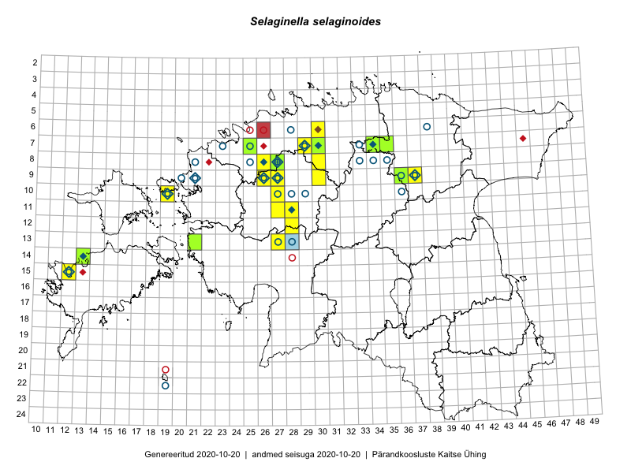

Selaginella selaginoides
Uuendatud: 2016-12-07
Kaardile koondatud taksonid: Selaginella selaginoides (L.) P.Beauv. ex Schrank & Mart.

Kaart põhineb 21 vaatlusel. Taime on leitud 7 ruudust.
| Ruut | Vaatleja(d) | Vaatlusaeg | Kirje tüüp | Viide andmebaasikirjele |
|---|---|---|---|---|
| 12-28 | Tiit Hallikma, Toomas Kukk, Indrek Tammekänd | 2015-06-09 | ruut/ala | vaata PlutoFis |
| 12-28 | Tiit Hallikma, Indrek Tammekänd, Toomas Kukk | 2015-06-09 | punkt | vaata PlutoFis |
| 07-34 | Jana-Maria Habicht, Ester Valdvee | 2015-07-20 | ruut/ala | vaata PlutoFis |
| 07-34 | Jana-Maria Habicht, Ester Valdvee | 2015-07-20 | punkt | vaata PlutoFis |
| 07-34 | Jana-Maria Habicht, Ester Valdvee | 2015-07-20 | punkt | vaata PlutoFis |
| 07-34 | Jana-Maria Habicht, Ester Valdvee | 2015-07-20 | punkt | vaata PlutoFis |
| 14-13 | Mari Reitalu, Triin Reitalu | 2015-08-14 | ruut/ala | vaata PlutoFis |
| 14-13 | Mari Reitalu | 2015-08-14 | punkt | vaata PlutoFis |
| 07-34 | Jana-Maria Habicht, Ester Valdvee | 2015-07-20 | punkt | vaata PlutoFis |
| 14-13 | Mari Reitalu, Oliver Parrest | 2015-07-21 | ruut/ala | vaata PlutoFis |
| 15-12 | Mari Reitalu, Oliver Parrest | 2015-07-21 | ruut/ala | vaata PlutoFis |
| 14-13 | Mari Reitalu, Oliver Parrest | 2015-07-21 | punkt | vaata PlutoFis |
| 15-12 | Mari Reitalu, Oliver Parrest | 2015-06-21 | punkt | vaata PlutoFis |
| 14-13 | Meeli Mesipuu, Tiiu Kull, Katrin Kaldma, Eerik Leibak | 2016-05-28 | punkt | vaata PlutoFis |
| 08-27 | Erkki Otsman, Sergei Smirnov | ruut/ala | vaata PlutoFis | |
| 07-30 | Toomas Kukk, Peedu Saar | 2016-09-09 | ruut/ala | vaata PlutoFis |
| 07-30 | Peedu Saar, Toomas Kukk | 2016-09-09 | punkt | vaata PlutoFis |
| 07-30 | Peedu Saar, Toomas Kukk | 2016-09-09 | punkt | vaata PlutoFis |
| 08-27 | Erkki Otsman, Sergei Smirnov | 2016-07-27 | punkt | vaata PlutoFis |
| 10-19 | Ott Luuk, Meeli Mesipuu | 2016-09-15 | ruut/ala | vaata PlutoFis |
| 10-19 | Meeli Mesipuu, Ott Luuk | 2016-09-15 | punkt | vaata PlutoFis |